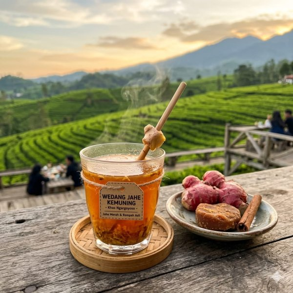
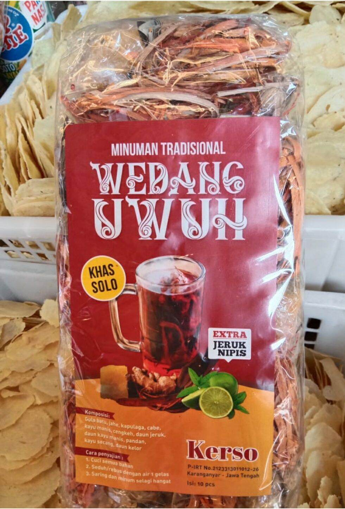

Sore hari di lereng Gunung Lawu, ketika udara mulai menggigit dan kabut mulai turun dari puncak, warung-warung kecil di pinggir jalan ramai dengan obrolan dan kepulan uap dari gelas-gelas wedang yang baru diseduh. Jahe yang dibakar lalu digeprek, serai yang menebarkan aroma segar, gula aren yang manis dan gelap — semua bersatu dalam minuman hangat yang sudah menjadi bagian tak terpisahkan dari keseharian masyarakat pegunungan Karanganyar.
Rempah yang Merawat Tubuh dan Jiwa
Wedang tradisional Karanganyar berkembang dari kebutuhan masyarakat pegunungan untuk menjaga tubuh tetap hangat di tengah suhu yang bisa turun drastis di malam hari. Bahan-bahannya semuanya berasal dari alam sekitar — jahe, serai, kayu manis, cengkeh, hingga kapulaga — yang diracik dengan proporsi yang dijaga turun-temurun dalam setiap keluarga.
"Setiap sore warung saya ramai orang ngobrol sambil minum wedang. Bukan cuma soal rasanya, tapi soal kebersamaannya itu yang bikin orang selalu balik lagi."
Fakta Menarik
- Wedang jahe Karanganyar biasanya menggunakan jahe yang dibakar terlebih dahulu agar rasanya lebih kuat dan aromatik
- Beberapa warung memiliki racikan rahasia keluarga yang tidak pernah dituliskan dalam bentuk resep formal
- Selain jahe, variannya meliputi wedang uwuh, wedang ronde, dan wedang secang yang masing-masing punya penggemar setia
- Dipercaya secara turun-temurun mampu menghangatkan tubuh, meredakan masuk angin, dan menjaga daya tahan tubuh


Mengapa Penting?
Wedang tradisional adalah pengingat bahwa kearifan lokal dalam bidang kesehatan dan kebersamaan sudah ada jauh sebelum istilah "wellness" menjadi tren. Melestarikan kebiasaan minum wedang bersama berarti menjaga ruang sosial yang tidak bisa digantikan oleh layar gawai manapun.